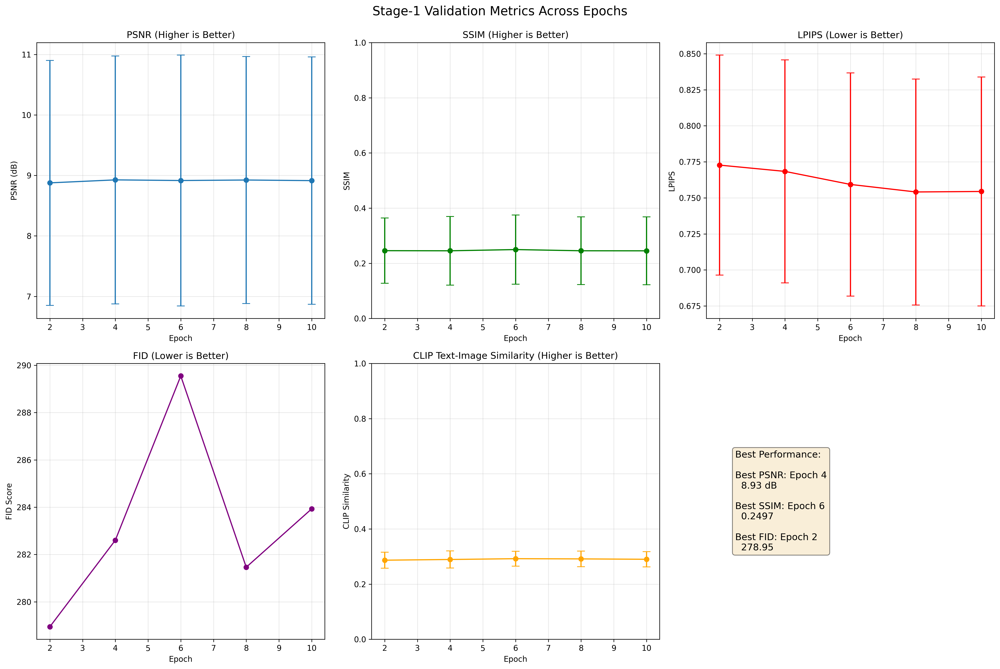

| Epoch | PSNR (dB) | SSIM | LPIPS | FID | CLIP Sim | Samples |
|---|---|---|---|---|---|---|
| Epoch 2 | 8.88 ± 2.02 | 0.2457 ± 0.1182 | 0.7727343237400055 | 278.94680459428173 | 0.286689453125 | 50 |
| Epoch 4 | 8.93 ± 2.05 | 0.2453 ± 0.1242 | 0.7683730745315551 | 282.604317550371 | 0.28925537109375 | 50 |
| Epoch 6 | 8.92 ± 2.07 | 0.2497 ± 0.1254 | 0.7593246197700501 | 289.549282553031 | 0.2921337890625 | 50 |
| Epoch 8 | 8.92 ± 2.04 | 0.2453 ± 0.1227 | 0.7541018235683441 | 281.4629584489022 | 0.2913623046875 | 50 |
| Epoch 10 | 8.91 ± 2.04 | 0.2451 ± 0.1229 | 0.7544392430782318 | 283.9311223169064 | 0.289990234375 | 50 |
